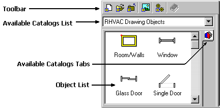
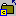
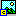

Catalog Browser |
  
|
Catalog Browser |
|

The Catalog Browser, pictured above, is located to the left of the drawing window.. You can switch between open catalogs, open more catalogs, create new catalogs, and drop objects onto the drawing window. To resize its width, click and drag the sizing bar on the right hand side.
New Catalog: Creates a new, blank catalog for you to work with. The Save New Catalog File As dialog will be displayed to allow you to immediately save the blank catalog. If there is already a catalog loaded into the list, the new one will be added after it in the dropdown list and a new tab for it will be added at the bottom of the catalog tabs. All changes that you make to the catalog will be saved automatically.
Open Catalog: Opens an existing catalog file and loads it into the Catalog Browser. If there is already a catalog loaded into the list, this one will be added after it in the dropdown list and another tab for it will be added at the bottom of the catalog tabs.

Close Catalog: Closes the current catalog and removes it from the Catalog Browser. Any changes you have made to the catalog will have already been saved automatically.
Change Catalog Icon: Opens the Select Catalog Icon dialog where you can select another picture file to use for this catalog. The icon for the catalog is used in the small tabs displayed vertically on the right side of the browser.Help On This Figure: Displays the online help reference pertaining to the currently selected figure icon in the list.
Available Catalogs List: This dropdown list displays all of the currently loaded catalogs for the current drawing. Note that each drawing saves its own list of open catalogs.
Available Catalogs Tabs: Displays a tab for each of the open catalogs in the Available Catalogs list. The tabs are just a more convenient way to switch between open catalogs. Note that each drawing saves its own list of open catalogs.
Object List: Displays all of the drawing objects available for the current catalog. To place an object in the list onto the drawing, drag and drop it onto the drawing window. Note that some objects have special requirements about where they can be dropped. For example, in the Rhvac Drawing Objects catalog, you can only drop a Single Door object onto a Wall object.